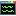

| Constellation Action | Keyboard Shortcut | User Action | Menu Icon |
|---|---|---|---|
| Open Scripting View | Ctrl + Shift + X | Views -> Scripting View |

|
The Scripting View provides access to any open graph in Constellation programmatically via a range of scripting languages (with Python being the preferred language). It is able to access any part of Constellation's internal public API, ie. anything a Constellation developer can access) as well as easy-to-use scripting specific data-structures.
When you open the Scripting View, it will initialise several custom objects for you to make use of in your scripts:
You can add your own custom objects by extending the ScriptingModule class in the Scripting Module. Speak to your developers for more information on what they have added, or to include your own custom scripting objects.
The current active graph is always readily accessible using the provided graph object and provides a number of convenient methods for reading from and writing to the graph. Under the hood, the graph object is an "SGraph", which provides access for interrogation and editing of the underlying Constellation graph. The SGraph object, as well as all the objects obtainable from an SGraph are documented in the API javadoc.
Using the utilities object, you can access all other open graphs using "getOpenGraphs()". This function will return a map or dictionary of graph name to graph for every currently open graph.
The utilities object can also be used to make a copy of graph through "copyGraph(graph)" This will return an in-memory copy of the provided graph.
Every user action in Constellation is designed to be a disposable operation (generally on the graph) called a plugin. The Scripting View provides the ability to run any plugin available to Constellation using the provided utilities object. The utilities object provides two ways to run a plugin:
Plugin names and parameters are documented in the Plugins tab of the Schema View within Constellation.